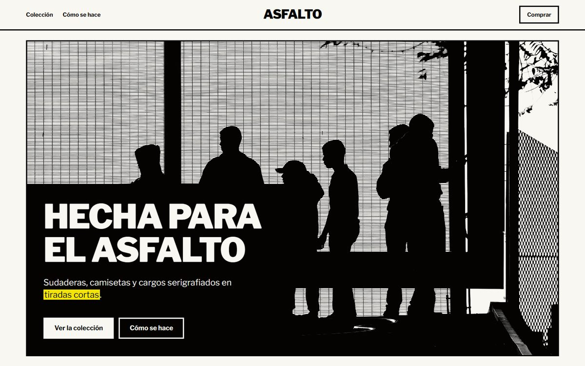
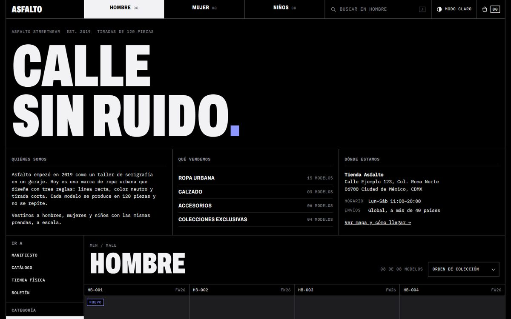
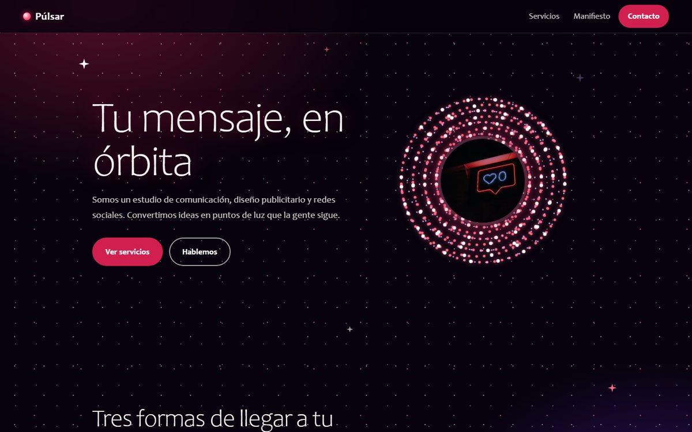
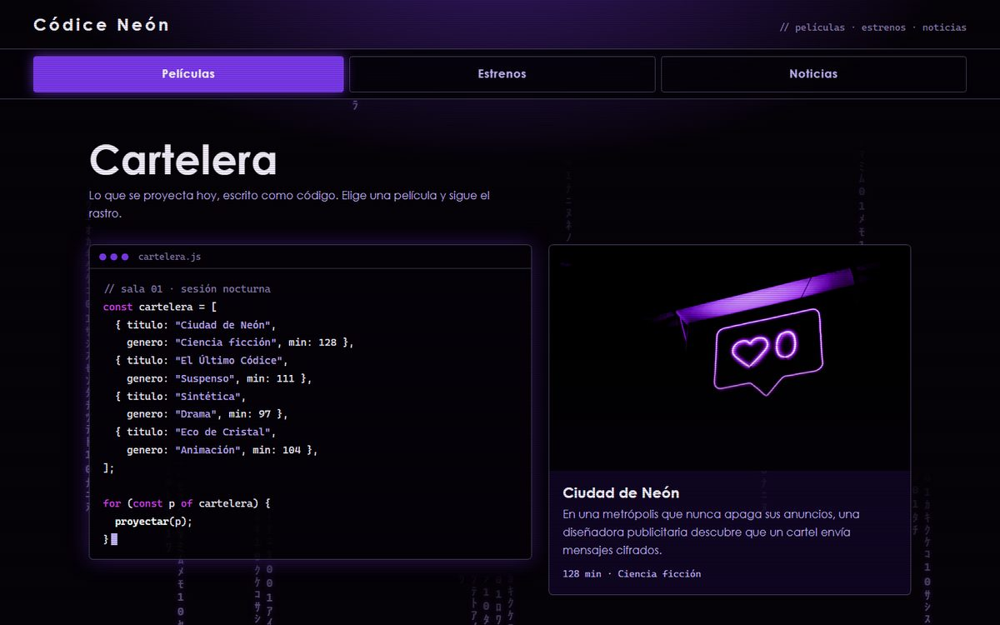
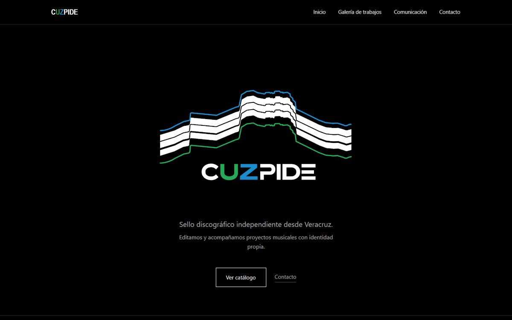
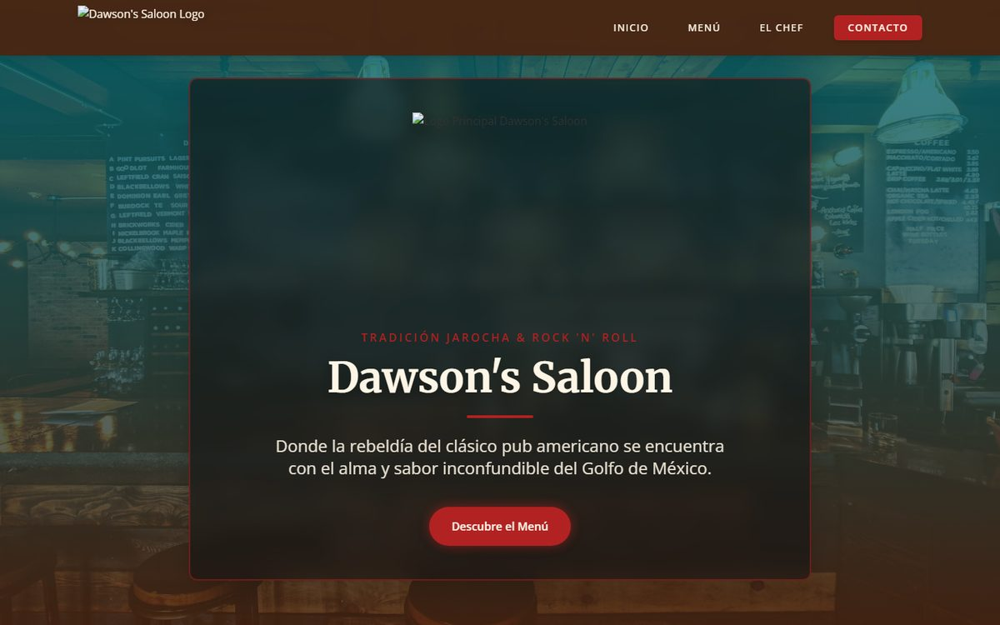
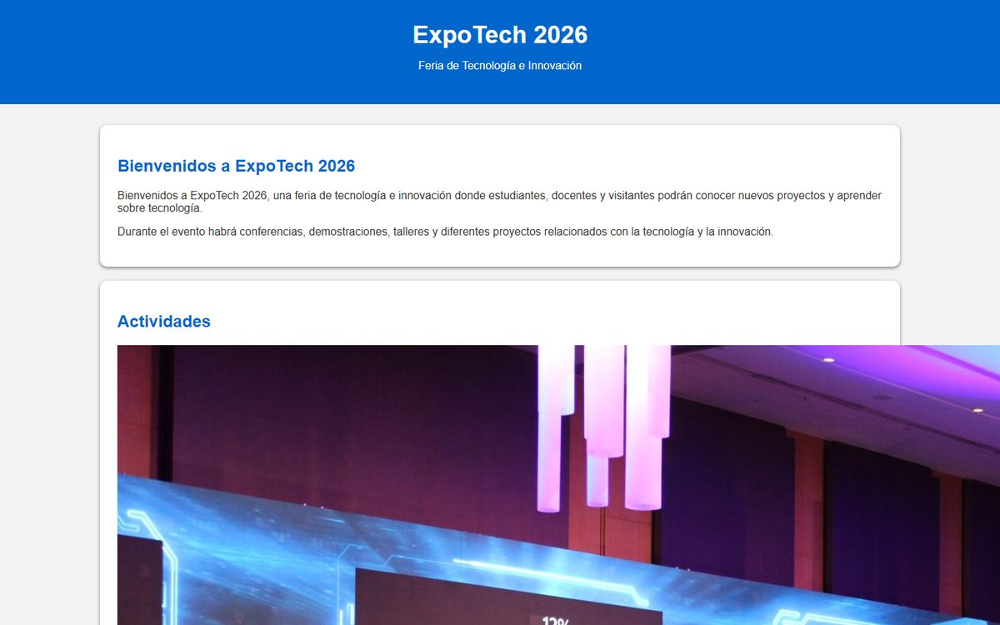

Sitios de marca
Páginas de inicio para marcas, sellos y negocios: identidad visual, tono de voz y estructura de navegación.

12 · nov 2026Tienda en línea
Asfalto, ropa urbana
Sitio para una marca de sudaderas, camisetas y cargos serigrafiados en tiradas cortas, con secciones de colección y proceso.

07 · oct 2026Catálogo
Asfalto Streetwear
Primera versión de la marca: catálogo por categorías (hombre, mujer, niños), modo claro y oscuro y datos de la tienda física.

06 · sep 2026Agencia
Púlsar
Sitio para un estudio de comunicación, diseño publicitario y redes sociales, con servicios, manifiesto y contacto.

05 · sep 2026Medio digital
Códice Neón
Portal de películas, estrenos y noticias donde la cartelera se presenta como código, con pestañas por sección.

04 · sep 2026Sello discográfico
CUZPIDE
Sitio para un sello discográfico independiente de Veracruz: logotipo propio, galería de trabajos y contacto.

03 · sep 2026Restaurante
Dawson's Saloon
Sitio para un pub de estilo americano en Veracruz, con menú, sección del chef y contacto.

02 · sep 2026Evento
ExpoTech 2026
Página de difusión para una feria de tecnología e innovación con conferencias, talleres y demostraciones.